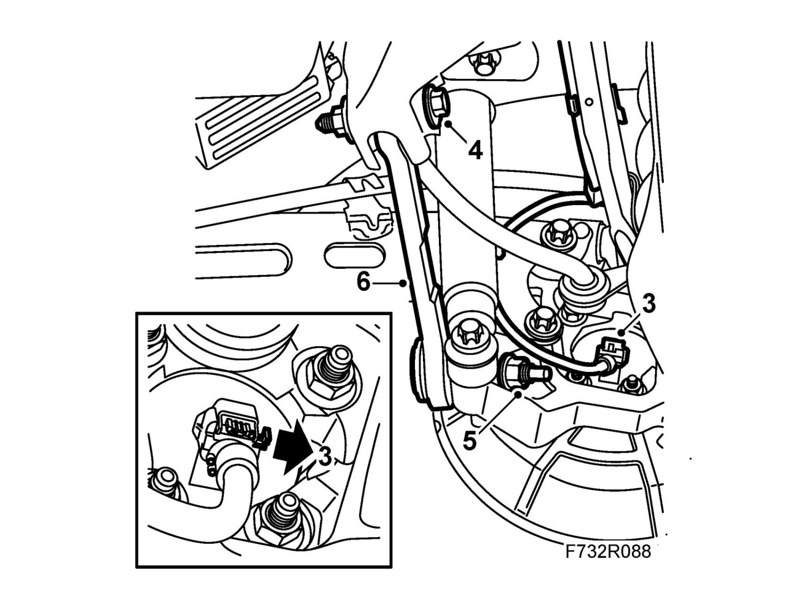

Rear Knuckle Alignment Link: Service and Repair
Toe-in linkTo remove
1. Raise the car.
2. Remove the rear wheel.
3. Remove the wheel sensor connection to avoid damage to the wheel sensor.

4. Mark and remove the toe-in link adjusting screw.
5. Clean and lubricate the threads in the outer toe-in link retaining bolts.
Remove the nut holding the toe-in link to the steering swivel member. Hold with a 10 mm sleeve in the outer mounting.
6. Remove the toe-in link.
To fit
1. Put the toe-in link into place.
2. Fit the adjusting screw and washer to the toe-in link. Fit the nut loosely.
3. Fit the nut which holds the toe-in link to the steering swivel member. Hold with a 10 mm wrench. Tighten the toe-in link nut with the correct torque, use 89 96 613 Sleeve, MacPherson strut.
Tightening torque 75 Nm +60° (55 lbf ft +60°)
4. Lift the lower link arm to normal position and tighten the nut of the adjustment bolt. Make sure that the adjustment bolt marking is set correctly.
Tightening torque 75 Nm +60° (55 lbf ft +60°)
5. Connect the connector to the wheel sensor.
6. Fit the rear wheel.
7. Lower the car to the floor.
8. Carry out four wheel checking and alignment, see Four wheel alignment.